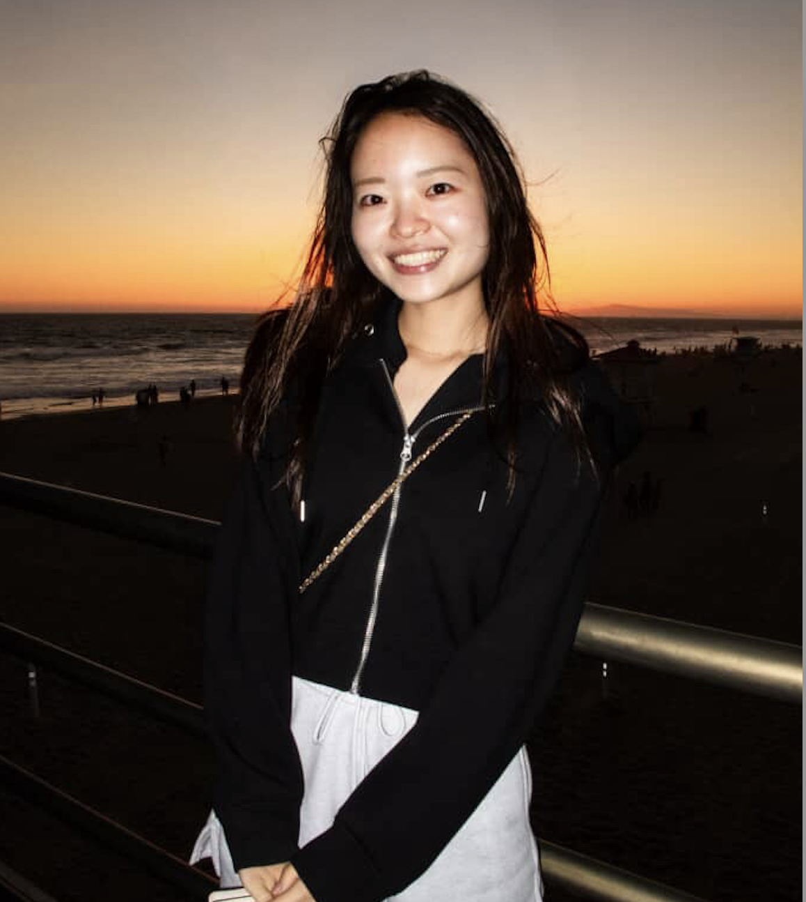

~~About me~~
Introduction
Hello! I am Honoka Nagata. I study Computer Science, and since August 2025, I have been studying abroad at Cal Poly Pomona for one year(2 semester). At my home university in Japan, I belong to a research lab focusing on security, and after returning I plan to work on my graduation research.
Out side of classes
Outside of classes, I have been working as a student mentor, teaching programming to midle and high school students, as well as working part-time job as a tutor and interning at IT company. My hobby is driving, photograpy, and traveling.
Why I chose CPP as my study abroad destination
I chose to study abroad at Cal Poly Pomona because I wanted to challenge myself in a diverse and global environment.
Why I Love Traveling
I love traveling because it allows me to learn about the unique culture and lifestyle of each region.
I also enjoy driving, so when I travel, I often rent a car to visit places surrounded by nature or try famous local restaurants.
I haven't traveled much in the U.S. yet, so I'd love to hear your recommendations!
During my one-year stay here, I'm planning to visit Universal Studios, Disneyland, and New York City.
~~Hobby~~
- photography (→link to other page)
- driving
details
I am driving a Mini Cooper in Japan right now, and someday I want to save up and buy a Jeep!
~~My weekly schedule~~
| Mon | Tue | Wed | Thu | Fri | Sat | Sun | |
|---|---|---|---|---|---|---|---|
| 8:30~9:45 | CIS1010 | - | - | - | - | Poly Lends trip | - |
| 12:00~13:00 | - | Poly Lends general meeting | - | - | |||
| 14:30~15:45 | CS4600 | CS2250 | CS4600 | CS2250 | |||
| 17:30~18:45 | - | CS4200 | - | CS4200 | |||
| 19:00~ | - | - | - | nsu general meeting |